原文连接:https://www.cnblogs.com/rope/p/10741659.html
一、ES6的Set、Map数据结构
Map、Set都是ES6新的数据结构，都是新的内置构造函数，也就是说typeof的结果，多了两个：
Set 是不能重复的数组
Map 是可以任何东西当做键的对象
ES6 提供了新的数据结构 Set。它类似于数组，但是成员的值都是唯一的，没有重复的值。


let s = new Set();
s.add(1);
s.add(2);
s.add(3);
s.add(3);
s.add(3);
s.add(4);
s.add(5);
console.log(s)
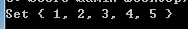
集合中添加数据用add()方法，会自动过滤已经有的元素。
最快的数组去重方法：
let s = new Set([1,2,3,3,3,4,5]);
console.log([...s])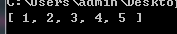
let s = new Set([1,2,3,4,5]);
console.log(s.size)
console.log(s.has(5))
console.log(s.delete(5))
console.log(s)
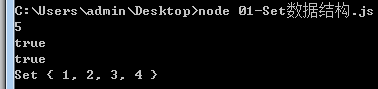
集合的关注点是在元素里面，而不关注顺序，所以不提供s[0]来枚举某项API，但是可以转为数组[...s]
JavaScript 的对象（Object），本质上是键值对的集合（Hash 结构），但是传统上只能用字符串当作键。这给它的使用带来了很大的限制。
为了解决这个问题，ES6 提供了 Map 数据结构。它类似于对象，也是键值对的集合，但是“键”的范围不限于字符串，各种类型的值（包括对象）都可以当作键。也就是说，Object 结构提供了“字符串—值”的对应，Map 结构提供了“值—值”的对应，是一种更完善的 Hash 结构实现。如果你需要“键值对”的数据结构，Map 比 Object 更合适。
let m = new Map();
const o = {a:1,b:2};
m.set("haha", 123);
m.set(o, 456)
m.set(888,789)
console.log(m)
console.log(m.get(o))
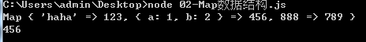
使用get()来得到元素的值，key是区分类型的。
二、函数式编程库
所谓的“函数式编程”指的是程序中的函数的是“纯函数”，就表示一个函数不改变传入的参数。
我们之前大量使用...、filter、map等等操作，略微麻烦，就有3个特别好用的函数式编程库应运而生。
2.1 immutable.js库
2.1.1概述
来自Facebook，是官方推荐的库，immutable表示不可变。immutable总是返回新的对象，不会修改原对象。
immutable不是深拷贝对象，创造性的使用DIFF算法，有一个结构共享机制，它所做的是智能分析改变，让改变后的元素可以共享改变之前的一些结构。
Immutable 使用了 Structural Sharing（结构共享），即如果对象树中一个节点发生变化，只修改这个节点和受它影响的父节点，其它节点则进行共享。
{
a:{"x":1 , "y":2},
b:{
c:{"x":3, "y":4},
d:{"x":5},
}
}{
a:{"x":1 , "y":2},
b:{
c:{"x":8, "y":4},
d:{"x":5},
}
}上面代码中，颜色相同部分，还是内存中同一个对象。
2.1.2基本讲解
官方：http://facebook.github.io/immutable-js/docs/#/
安装依赖：
npm install immutable --saveimmutable提供了两个数据类型：
List和Map是immutable自己封装的一个类，List是不可变的数组，Map是不可变的对象。
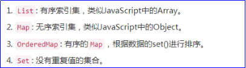
fromJS() 将一个原生js数据类型转换为immutable类型的数据
toJS() 将一个immutable类型的数据转换为JS类型的数据。
List()和Map() 用来创建新的List和Map对象（将原生JS对象和数组转换到不可变的Map和List）
immutable思维：
先用fromJS()或List()或Map()将原生JS的数组、对象、变为List、Map对象
然后再操作，比如对数组的push操作
最后.toJS()将immutable对象变为原生JS的数组、对象
在Nodejs环境中引包：
var immutable = require("immutable");
var List = immutable.List
const list1 = List(["白板","幺鸡","三条","三万"])
const list2 = list1.push("四条")
console.log(list1.toJS())
console.log(list2.toJS())会发现push之后，原数组没有改变，只返回了新数组。
上面案例是用List(原数组)将数组变为List对象，也可以用fromJS。
var immutable = require("immutable");
var fromJS = immutable.fromJS
const list1 = fromJS(["白板","幺鸡","三条","三万"])
const list2 = list1.push("四条")
console.log(list1.toJS())
console.log(list2.toJS())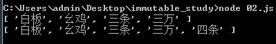
数组的头尾操作，也不会改变原数组，都是返回新数组：
var immutable = require("immutable");
var fromJS = immutable.fromJS
const list1 = fromJS(["白板","幺鸡","三条","三万"])
const list2 = list1.push("四条")
const list3 = list1.pop()
const list4 = list1.unshift("东风")
const list5 = list1.shift()
console.log(list1.toJS())
console.log(list2.toJS())
console.log(list3.toJS())
console.log(list4.toJS())
console.log(list5.toJS())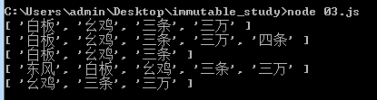
更改set
set表示更改下标为2的项为“二筒”，注意不会真的改变原数组，而是返回新数组：
const list1 = fromJS(["白板","幺鸡","三条","三万"])
const list2 = list1.set(2,"二筒");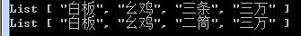
对象也有set
const obj1 = fromJS({"a" : 1, "b" : 2 ,"c" : 3})
const obj2 = obj1.set("b",888)
console.log(obj1.toJS())
console.log(obj2.toJS())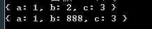
在数组中查找某一项，使用find()，寻找某一项下标用findIndex()
得到Map对象的某一个键的值，要用get()方法
var immutable = require("immutable");
var fromJS = immutable.fromJS
const data = fromJS([
{"id" : 1, "name" : "小明", "age" : 12},
{"id" : 2, "name" : "小红", "age" : 12},
{"id" : 3, "name" : "小强", "age" : 13},
])
const item = data.find(item=>item.get("id") == 2);
console.log(item.toJS())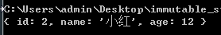
删除用delete，删除下标为2的项
const list1 = fromJS([111,222,333,888,999]);
const list2 = list1.delete(2);
console.log(list1.toJS());
console.log(list2.toJS());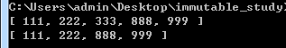
is()函数验证是否相等
var {is , Map} = require("immutable");
let o1 = Map({a : 1, b : 2, c : 3});
let o2 = Map({a : 1, b : 2, c : 3});
console.log(o1 == o2); //在内存中不相等
console.log(is(o1,o2)); //在immutable世界中是相等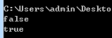
2.1.3真实项目场景
真实项目场景 - 增加todo，用set设置，用get获取
var immutable = require("immutable");
var fromJS = immutable.fromJS
const data = fromJS({
"todos" : [
{"id" : 1,"title" : "吃饭", "done" : false },
{"id" : 2,"title" : "睡觉", "done" : false },
{"id" : 3,"title" : "打豆豆", "done" : false },
],
"show" : "ALL"
})
const newData = data.set(
"todos",
data.get("todos").push({"id" : 4,"title" : "打架", "done" : false})
)
console.log(newData.toJS())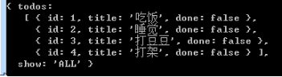
真实项目场景 - 删除id为2的todo，使用delete(2)
//删除id为2的项
const newdata = data.set(
"todos",
data.get("todos").delete(data.get("todos").findIndex(item=>item.get("id")== 2)
));
console.log(newdata.toJS());
方法2：
const newData = data.set(
"todos",
data.get("todos").filter(item=>item.get("id") != 2)
)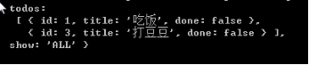
真实项目场景 - 改变id为2的项title为“吃鸡”
方法1
var index = data.get("todos").findIndex(item=>item.get("id") == 2);
var item = data.get("todos").get(index)
const newData = data.set("todos",data.get("todos").set(index, item.set("title","吃鸡")));
console.log(newData.toJS())
方法2
const newData = data.set("todos",data.get("todos").map(item=>{
return item.get("id") == 2 ? item.set("title" , "吃鸡") : item;
}))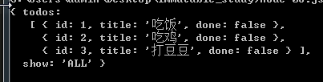
2.1.4和redux结合
改造TodoList项目：
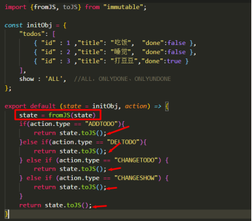
只改变reducers中的文件夹的写法，其它地方一律不改。
state的数据依然是原生JS的数组和对象，只不过在reducer函数运行中，瞬间变成为immutable的List和Map了，但是出去的时候就toJS了，里外里，state还是原生数组、对象。
import {fromJS , toJS} from "immutable";
const initObj = {
"todos" : [
{"id" : 1 , "title" : "吃饭" , "done" : false},
{"id" : 2 , "title" : "睡觉" , "done" : true},
{"id" : 3 , "title" : "打豆豆" , "done" : true}
],
"show" : "ALL"
}
export default (state = initObj, action) => {
//下面的语句很重要，变为immutable对象
state = fromJS(state);
if(action.type == "ADDTODO"){
return state.set("todos", state.get("todos").push(
{
"id" : state.get("todos").reduce((a,b)=>{
return b.get("id") > a ? b.get("id") : a
}, 0) + 1,
"title" : action.title,
"done" : false
}
)).toJS();
}else if(action.type == "DELTODO"){
return state.set(
"todos",
state.get("todos").filter(item=>item.get("id") != action.id)
).toJS();
}else if(action.type == "CHANGETODO"){
return state.set(
"todos",
state.get("todos").map(
item => item.get("id") == action.id ? item.set(action.k, action.v) : item
)
).toJS();
}else if(action.type == "CHANGESHOW"){
return state.set("show", action.show).toJS();
}
return state.toJS();
}2.2 Ramda.js库
纯函数，也叫作“兰姆达函数”，就是ramda这个词。http://ramda.cn/
2.2.1函数柯里化基础
函数柯里化(Currying)，是把接受多个参数的函数变换成接受一个单一参数的函数，并且返回接受余下的参数，而且返回结果的新函数。柯里化函数就是逐步传参，逐步缩小函数的适用范围，逐步求解的过程。
简单的加法函数：
function add(x,y){
return x + y;
}
add(2,3);//5如果用函数柯里化接受两个参数的函数变成单一参数，如下：
function add(x) {
return function (y){
return x + y
}
}
console.log(add(2)(3))
2.2.2基本讲解
npm install ramda --save数组尾插一项：
var R = require("ramda");
var arr1 = ["红中","白板","幺鸡"];
var arr2 = R.append("一筒", arr1)
var arr3 = R.append("二筒")(arr1)
console.log(arr1)
console.log(arr2)
console.log(arr3)被操作的元素放到最后一个参数。
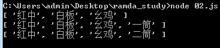
数组头插一项：
var R = require("ramda");
var arr1 = ["红中","白板","幺鸡"];
var arr4 = R.prepend("发财",arr1)
console.log(arr4)
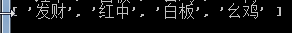
2.2.3真实项目场景
改变对象的b属性为8
这里使用了非常重要的方法R.lensProp()聚焦到某属性，功能就是让改变的值从原基础上进行修改
var R = require("ramda");
const obj1 = {"a" : 1,"b" : 2,"c" : 3}
const obj2 = R.set(R.lensProp("b") , 8, obj1)
console.log(obj2)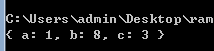
删除id为2的项：
const state = {
"todos": [
{"id" : 1, "title" : "吃饭", "done" : false},
{"id" : 2, "title" : "睡觉", "done" : false},
{"id" : 3, "title" : "打豆豆","done" : false}
],
"show":"ALL"
}
//删除id为2的项
const newstate = R.set(R.lensProp("todos"), R.filter(item=>item.id != 2, state.todos) , state);
console.log(newdata)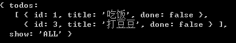
修改id为2的项title为吃鸡
const newstate = R.set(R.lensProp("todos"),R.map(item => item.id == 2 ?
R.set(R.lensProp("title"),"吃鸡",item) : item , state.todos), state);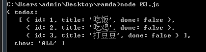
修改show为ONLYDONE
const newstate = R.set(R.lensProp("show") , "ONLYDONE", state);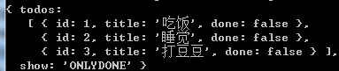
基本上一条语句能够解决问题，不再写...了，并且相比如immutable，没有Map、List和对象、数组的转换。
2.2.4和redux结合
还是用todolist举例，在reducers/index.js中修改，下面标黄色的语句的R.__是占位符：
var R = require("ramda");
const initObj = {
"todos" : [
{"id" : 1 , "title" : "吃饭" , "done" : false},
{"id" : 2 , "title" : "睡觉" , "done" : true},
{"id" : 3 , "title" : "打豆豆", "done" : true}
],
"show" : "ALL"
}
export default (state = initObj, action) => {
//R.__表示占位符，下面调用setTodos时，就等于传入了要更改成为的值
const setTodos = R.set(R.lensProp("todos"), R.__ , state);
const setShow = R.set(R.lensProp("show") , R.__ , state);
if(action.type == "ADDTODO"){
return setTodos(R.append({
"id" : state.todos.reduce((a,b) => b.id > a ? b.id : a, 0) + 1,
"title" : action.title,
"done" : false
},state.todos));
}else if(action.type == "DELTODO"){
return setTodos(state.todos.filter(item=>item.id != action.id));
}else if(action.type == "CHANGETODO"){
return setTodos(state.todos.map(item=>item.id == action.id ? R.set(R.lensProp(action.k), action.v, item) : item))
}else if(action.type == "CHANGESHOW"){
return setShow(action.show);
}
return state;
}2.3 lodash.js库
2.3.1基本讲解
实际上underscore.js已经在“函数库工具”输给了lodash，lodash完全可以替代underscore。
中文：http://www.css88.com/doc/lodash/
npm install --save lodash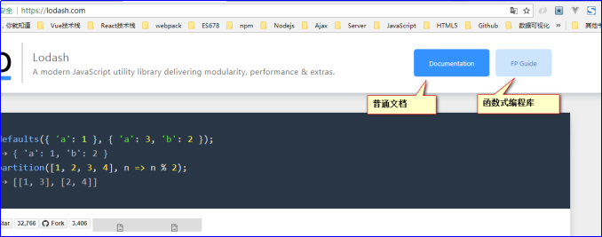
underscore有的函数，lodash全有，比如数组去重和最大最小值：
var _ = require("lodash");
var arr1 = [3,3,3,3,4,4,4,4,5,5,5,5,3];
var arr2 = _.uniq(arr1);
console.log(arr1);
console.log(arr2);
console.log(_.max(arr1));
console.log(_.min(arr1));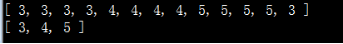
lodash中有子包，叫做fp。fp是functional programing函数式编程的意思。
需要引入这个包
var fp = require("lodash/fp");更改b属性为8：
var fp = require("lodash/fp");
var obj1 = {"a" : 1 , "b" : 2 , "c" : 3};
var obj2 = fp.set("b" , 8 , obj1);
console.log(obj1);
console.log(obj2);
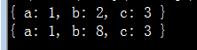
和ramda一样，被操作对象写最后一个参数。
2.3.2真实项目场景
删除
var fp = require("lodash/fp");
const state = {
"todos" : [
{"id" : 1 , "title" : "吃1饭" , "done" : false},
{"id" : 2 , "title" : "吃2饭" , "done" : false},
{"id" : 3 , "title" : "吃3饭" , "done" : false}
],
"show" : "ALL"
};
//删除id为2的项
const newstate = fp.set("todos", state.todos.filter(item => item.id != 2), state);
console.log(state);
console.log(newstate);
增加：
const newstate = fp.set("todos", fp.concat(
state.todos,
{
"id" : state.todos.reduce((a,b) => b.id > a ? b.id : a, 0) + 1,
"title": "吃鸡",
"done" : false
}
) , state);
修改id为2的项的title为“吃鸡”
const newstate = fp.set("todos",state.todos.map(item=>item.id == 2 ? fp.set("title", "吃鸡", item) : item), state);如果遇见比较难的场景，此时可以用克隆方法，比如在第2项之间插入一项
const _todos = fp.clone(state.todos)
//更改克隆之后的数组
_todos.splice(2,0,{"id": 4,"title":"游泳","done":false})
//更改state
const newstate = fp.set("todos", _todos, state)
console.log(state)
console.log(newstate)const car = {
"cars" : {
"a" : [
{
"name" : "奥迪" ,
"series" : [
{
"name" : "A6",
"type" : "豪华轿车"
},
{
"name" : "A4",
"type" : "豪华轿车"
}
]
},
{
"name" : "奥拓",
"series" : [{"奥拓1号" : 2}]
}
],
"b" : [
{"奔驰" : 1}
]
}
}
//改变A6的车系为普通轿车
var newstate = fp.cloneDeep(car);
newstate.cars.a[0].series[0].type = '普通轿车';
console.log(JSON.stringify(newstate))2.3.3 和redux结合
import fp from "lodash/fp";
const initObj = {
"todos" : [
{"id" : 1 , "title" : "吃饭" , "done" : false},
{"id" : 2 , "title" : "睡觉" , "done" : true},
{"id" : 3 , "title" : "打豆豆" , "done" : true}
],
"show" : "ALL"
}
export default (state = initObj, action) => {
if(action.type == "ADDTODO"){
return fp.set("todos" , fp.concat(state.todos , {
"id" : state.todos.reduce((a,b) => b.id > a ? b.id : a , 0) + 1,
"title" : action.title,
"done" : false
}), state);
}else if(action.type == "DELTODO"){
return fp.set("todos" , state.todos.filter(item => item.id != action.id) , state);
}else if(action.type == "CHANGETODO"){
return fp.set("todos", state.todos.map(item=>item.id == action.id ? fp.set(action.k,action.v,item) : item) , state);
}else if(action.type == "CHANGESHOW"){
return fp.set("show" , action.show , state);
}
return state;
}三、异步
3.1搭建服务器
我们将所有前端的东西都放入www文件夹中。
Node.js写app.js实现数据接口：
var express = require("express");
var app = express();
app.use(express.static("www"))
app.get("/api",(req,res)=>{
res.json({"result":8})
})
app.listen(3000);3.2 redux-thunk解决异步
我们现在有四个文件都没有地方适合写异步：components、actions、constants、reducer。
所以React提供了react-thunk包，thunk是中间件，所谓的中间件就是在发出action和reducer进行改变的中间，要做的事。
https://www.npmjs.com/package/redux-thunk
安装依赖：
npm install --save redux-thunkmain.js
import React from "react";
import ReactDOM from "react-dom";
import { createStore, applyMiddleware} from "redux";
import { Provider } from 'react-redux'
import thunk from 'redux-thunk'
import reducers from "./reducers/index";
import logger from "redux-logger";
//引入父组件
import App from "./containers/App";
//创建Redux store 仓库用来存放状态
const store = createStore(reducers, applyMiddleware(logger, thunk))
ReactDOM.render(
<Provider store={store}>
<App></App>
</Provider>,
document.getElementById('app')
)
components/counter/index.js组件，按钮点击之后做addServer：
<button onClick={()=>{this.props.counterActions.addServer()}}>加服务器那么多</button>
此时actions/counterActions.js文件中，就可以写异步函数了：
两步：第一步请求服务器数据，第二步发出action。将服务器的返回结果，当做载荷发给reducer。
import {ADD , MINUS , ADDSERVER} from "../constants/COUNTER.js";
//同步阵营，直接返回一个Action
export const add = () => ({"type" : ADD});
export const minus = () => ({"type" : MINUS});
//异步有两个()，第一个()接受按钮传的参数，第二个()是系统给你的dispatch和getState
//export const addServer = (n)=> (dispatch, getState)=>{
// alert(n)
// alert(dispatch)
// alert(getState().counter.v)
//}
export const addServer = ()=> async (dispatch , getState) => {
//发出Ajax请求，实际上是fetch请求，fetch不是Ajax
const {result} = await fetch("/api").then(data=>data.json());
//发action，因为唯一能改变reducer的方法就是dispath一个action
dispatch({"type" : ADDSERVER , result})
}
constants/COUNTER.js
export const ADDSERVER = "ADDSERVER_COUNTER";reducers/counter.js
import {ADD , MINUS , ADDSERVER} from "../constants/COUNTER.js";
export default (state = {"v" : 0} , action) => {
if(action.type == ADD){
...
}else if(action.type == MINUS){
...
}else if(action.type == ADDSERVER){
return {
"v" : state.v + action.result
}
}
return state;
}
如果使用fetch，要安装babel插件：babel-plugin-transform-runtime
babel把async await翻译成浏览器都不认识的语句了，所以要用插件解决，不让babel翻译：
const path = require('path');
module.exports = {
entry : "./www/app/main", // 入口
output: {
path: path.resolve(__dirname, "www/dist"), // 出口文件夹
filename: "bundle.js" // 出口文件名
},
watch : true, // 自动检测变化，进行打包
module: { // 配置一些插件
rules: [
{
test: /\.js$/, // 所有.js结尾的文件
loader: "babel-loader", // 都要使用babel-loader处理
include: [path.resolve(__dirname, "www/app")],
exclude: [path.resolve(__dirname, "node_modules")],
options: {
presets: ["env" , "react"],
plugins: ["transform-object-rest-spread", "transform-runtime" ]
}
}
]
}
}现在讲解重要知识，如何从服务器上请求默认数据，此时要通过：
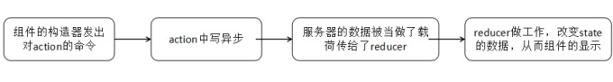
结合Echarts.js使用
app.js服务端出数据接口：
var a = 0;
var b = 0;
var c = 0;
app.get("/api2" , (req,res)=>{
res.json({
"result": [
{ value: a, name: '清晰' },
{ value: b, name: '一般' },
{ value: c, name: '懵逼' }
]
});
});
//投票接口
app.get("/toupiao/:zimu" , (req,res)=>{
var zimu = req.params.zimu;
if(zimu == "a") a++;
if(zimu == "b") b++;
if(zimu == "c") c++;
res.json({
"result": [
{ value: a, name: '清晰' },
{ value: b, name: '一般' },
{ value: c, name: '懵逼' }
]
});
});
app.listen(3000);containers/App.js
import React from 'react';
import {connect} from "react-redux";
import Counter from "../components/counter/index.js";
import Pie from "../components/pie/index.js";
export default class App extends React.Component {
constructor(props) {
super(props);
}
render() {
return (
<div>
<Counter></Counter>
<Pie></Pie>
</div>
);
}
}
components/pie/index.js组件的构造函数中调用函数：
import React from 'react';
import {connect} from "react-redux";
import {bindActionCreators} from "redux";
import * as pieActions from "../../actions/pieActions.js";
class Pie extends React.Component {
constructor(props) {
super(props);
///组件还没上树时，发异步请求数据
props.pieActions.loadServer();
}
//组件已经上树，然后初始化echart结构
componentDidMount(){
this.pic = echarts.init(this.refs.pic);
}
//React开发中没有回调函数的，所以数据回来了，在组件将要更新的生命周期写
//组件将要更新，为什么会将要更新，因为reducer中的result变了！
//为什么它变了，因为fetch回来了，从而发出dispatch，影响result了。
componentWillUpdate(nextProps){
//这是百度的图表插件标准写法，就是一个配置，最重要的是最后一项data，来自服务器
var option = {
tooltip: {
trigger: 'item',
formatter: "{a} <br/>{b}: {c} ({d}%)"
},
legend: {
orient: 'vertical',
x: 'left',
data: ['清晰', '一般', '懵逼']
},
series: [
{
name: '懵逼指数',
type: 'pie',
radius: ['50%', '70%'],
avoidLabelOverlap: false,
label: {
normal: {
show: false,
position: 'center'
},
emphasis: {
show: true,
textStyle: {
fontSize: '30',
fontWeight: 'bold'
}
}
},
labelLine: {
normal: {
show: false
}
},
//这里呈递数据
data: nextProps.result
}
]
};
//设置option，组件就能显示图表了
this.pic.setOption(option);
}
render() {
return (
<div>
<p>结果：{this.props.result}</p>
<div ref="pic" style={{"width":"300px" ,"height":"300px"}}></div>
<button onClick={()=>{this.props.pieActions.toupiao('a')}}>清晰</button>
<button onClick={()=>{this.props.pieActions.toupiao('b')}}>一般</button>
<button onClick={()=>{this.props.pieActions.toupiao('c')}}>懵逼</button>
</div>
);
}
}
export default connect(
({pie})=>({
result: pie.result
}),
(dipatch)=>({
pieActions: bindActionCreators(pieActions, dipatch)
})
)(Pie);
actions/pieActions.js中写异步请求数据
export const loadServer = () => async (dispatch , getState) => {
//异步请求数据
const {result} = await fetch("/api2").then(data=>data.json());
//存储到reducer
dispatch({"type" : "LOADSERVER" , result});
}
export const toupiao = (zimu) => async (dispatch, getState) => {
const { result } = await fetch("/toupiao/" + zimu).then(data => data.json());
dispatch({ "type": "LOADSERVER", result });
}
reducers/pie.js要处理action的工作
export default (state = {"result" : []} , action) => {
if(action.type == "LOADSERVER"){
return {"result" : action.result};
}
return state;
}
reducers/index.js
import {combineReducers} from "redux";
import counter from "./counter.js";
import pie from "./pie.js";
//暴露合并的reducer
export default combineReducers({
counter ,
pie
});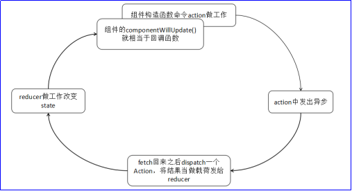